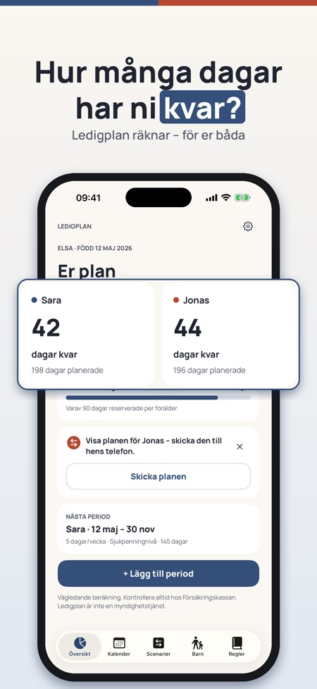
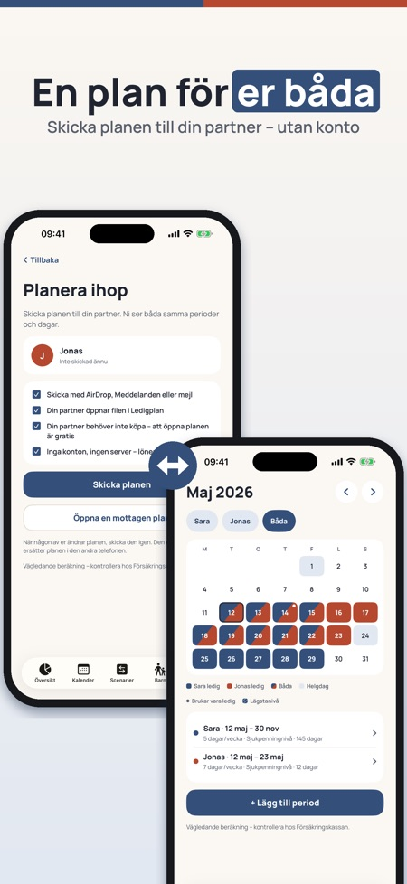
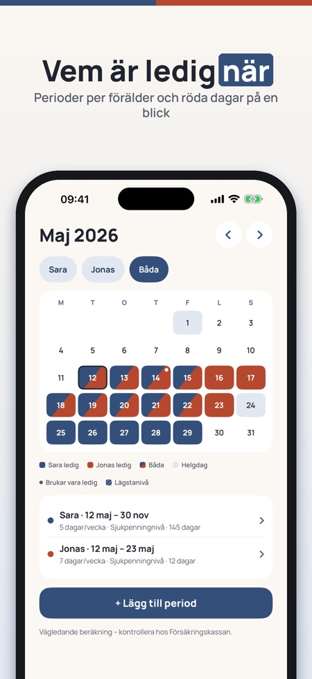

Hur många föräldradagar har ni kvar, och vem tar vilka? Ledigplan räknar dagarna för er båda, visar dem i en gemensam kalender och låter er jämföra planer innan ni bestämmer.



Dagar kvar per förälder och per nivå, med reserverade dagar, för er båda i en gemensam plan.
Regler för Sverige, Norge, Danmark och Finland, med källa.
Ja, du skickar planen som en fil och ni ser samma plan. Delning ingår i Ledigplan Plus.
Appen visar dubbeldagar i kalendern och förklarar reglerna för dem.
För Sverige, Norge och Danmark får du en vägledande uppskattning om du vill ange lön. Uppgiften stannar på telefonen.
Ja, till kalendern eller som PDF till arbetsgivaren.
Översikt, kalender och regler för ett barn och en plan. Ledigplan Plus är ett engångsköp som låser upp delning, scenarier, export och flera barn. Ingen prenumeration.
Nej, Ledigplan är fristående och beräkningen är vägledande. Ansökan gör du alltid hos myndigheten.
Hur många föräldradagar har ni kvar – och vem tar vilka? Ledigplan räknar dagarna för er båda, visar dem i en gemensam kalender och låter er jämföra planer innan ni bestämmer. Ingen inloggning, inget konto.
Myndighetens verktyg planerar en förälder i taget. Ledigplan är en plan för er båda.
Översikt, kalender och regler för ett barn och en plan kan användas utan köp. Ledigplan Plus är ett engångsköp som låser upp delning med partner, scenarier, export och flera barn. Ingen prenumeration.
Beräkningen är vägledande. Ledigplan är fristående och inte kopplad till Försäkringskassan, NAV, Udbetaling Danmark eller Kela. Ansökan gör du alltid hos myndigheten.